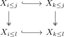

K space of an opposite category
Proposition
Let $\mathcal{A}, \mathrm{in}(\mathcal{A}), \mathrm{proj}(\mathcal{A})$ be an exact infinity category. Then there exists a natural equivalence
\begin{align*}
\mathrm{Span}(\mathcal{E}) \rightarrow \mathrm{Span}(\mathcal{E}^{\mathrm{op}})
\end{align*}
with respect to the opposite exact category structure
in particular the connective K spaces coincide
\begin{align*}
K(\mathcal{E}) \simeq K(\mathcal{E}^{\mathrm{op}})
\end{align*}
Proof
Remember that the Q construction was given by
\begin{align*}
Q_n(\mathcal{C}) \subseteq \mathrm{Fun}(\mathrm{Tw}(\Delta^n), \mathcal{C})
\end{align*}
given
- on objects where $X_{0 \leq j} \rightarrow X_{0 \leq j -1}$ are projections and $X_{j \leq n} \rightarrow X_{j + 1 \leq n}$ are inclusions.
- and on morphisms given by exact squares

for $i \leq k \leq l \leq j$
(note that the latter implies that every $X_{i \leq j} \rightarrow X_{i \leq j - k}$ whereever defined is a projection resp. $X_{i \leq j} \rightarrow X_{i + k \leq j}$ is an injection whereever defined)
category of spans for an exact infinity category
then by